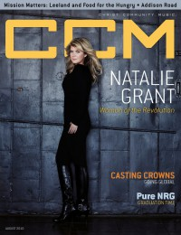

CCM Digital
Aug 2010
| Cover |
|---|
|  |
 Online Exclusively Online Exclusively |
| Writers in this Issue |
| Argyrakis, Andy Conner, Matt Greer, Andrew Haley, Adria Hall, Mark Hoernschemeyer, Emily Lusk, Caroline |
Natalie Grant
Cover Feature:- "A Righteous Revolution" by Caroline Lusk
- "Into the Whole World: Casting Crowns goes global" by Mark Hall
- "Learning How a Kid can [Now!] be a Kid!"
- "At the Heart: Welcoming Jesus In" by Emily Hoernschemeyer
- Kathryn Scott by Emily Hoernschemeyer
- Mat Kearney by Matt Conner
- Marvin Sapp by Andrew Greer
- The Farewell Drifters by Andrew Greer
- "O.C. Supertones" by Andy Argyrakis
- Chris August by Caroline Lusk
- Nichole Nordeman by Caroline Lusk
- Bebo Norman by Andrew Greer
- "Joe Rickard" by Caroline LuskRed (Joe Rickard)
- "Jason Ingram"
- Kerrie Roberts by Matt Conner
- Mark Tedder - The Door by Andrew Greer
- Jesus Culture - Consumed by Matt Conner
- Natalie Grant - Love Revolution by Matt Conner
- Britt Nicole - Acoustic by Andrew Greer
- Regie Hamm - Set It On Fire by Matt Conner
- Casting Crowns - Until the Whole World Hears... Live by Matt Conner
- The Showdown - Blood In The Gears by Andy Argyrakis
- Ed Kowalczyk - Alive by Matt Conner
- Chris August - No Far Away by Andy Argyrakis
- Esterlyn - Call Out by Andrew Greer
- Jordan Elias - Desert Cry by Andy Argyrakis
- D-Maub - Call Out by Andy Argyrakis
- DeWayne Woods - My Life's Lyric by Andrew Greer
- Voices of Unity, Deitrick Haddon - Blessed & Cursed Soundtrack by Andrew Greer
- Group 1 Crew - Spacebound by Andy Argyrakis
- Robert Randolph and the Family Band - We Walk This Road by Matt Conner
- Charice - Charice by Andy Argyrakis
- Ricky Skaggs - Mosaic by Andrew Greer
- "Something for the Rest of Us Tour, Charter One Pavilion, Chicago, IL" by Andy Argyrakis
- "Marian Jordan and Redeemed Girl Ministries" by Caroline Lusk
- "Waiting" by Caroline Lusk
- "Hungry For Love" by Adria HaleyLeeland, Food for the Hungry
© 2011 CMnexus. Last updated May 2025. Contact: editor -AT- cmnexus -DØT- org